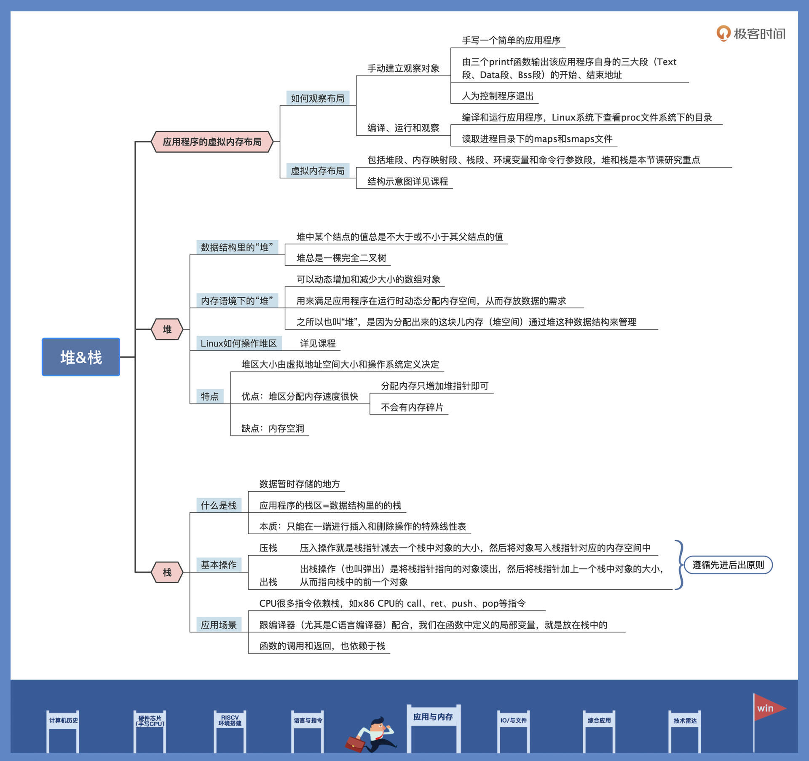

- 00 开篇词 练好基本功，优秀工程师成长第一步.md
- 01 CISC & RISC：从何而来，何至于此.md
- 02 RISC特性与发展：RISC-V凭什么成为“半导体行业的Linux”？.md
- 03 硬件语言筑基（一）：从硬件语言开启手写CPU之旅.md
- 04 硬件语言筑基（二）_ 代码是怎么生成具体电路的？.md
- 05 指令架构：RISC-V在CPU设计上到底有哪些优势？.md
- 06 手写CPU（一）：迷你CPU架构设计与取指令实现.md
- 07 手写CPU（二）：如何实现指令译码模块？.md
- 08 手写CPU（三）：如何实现指令执行模块？.md
- 09 手写CPU（四）：如何实现CPU流水线的访存阶段？.md
- 10 手写CPU（五）：CPU流水线的写回模块如何实现？.md
- 11 手写CPU（六）：如何让我们的CPU跑起来？.md
- 12 QEMU：支持RISC-V的QEMU如何构建？.md
- 13 小试牛刀：跑通RISC-V平台的Hello World程序.md
- 14 走进C语言：高级语言怎样抽象执行逻辑？.md
- 15 C与汇编：揭秘C语言编译器的“搬砖”日常.md
- 16 RISC-V指令精讲（一）：算术指令实现与调试.md
- 17 RISC-V指令精讲（二）：算术指令实现与调试.md
- 18 RISC-V指令精讲（三）：跳转指令实现与调试.md
- 19 RISC-V指令精讲（四）：跳转指令实现与调试.md
- 20 RISC-V指令精讲（五）：原子指令实现与调试.md
- 21 RISC-V指令精讲（六）：加载指令实现与调试.md
- 22 RISC-V指令精讲（七）：访存指令实现与调试.md
- 23 内存地址空间：程序中地址的三种产生方式.md
- 24 虚实结合：虚拟内存和物理内存.md
- 25 堆&栈：堆与栈的区别和应用.md
- 26 延迟分配：提高内存利用率的三种机制.md
- 27 应用内存管理：Linux的应用与内存管理.md
- 28 进程调度：应用为什么能并行执行？.md
- 29 应用间通信（一）：详解Linux进程IPC.md
- 30 应用间通信（二）：详解Linux进程IPC.md
- 31 外设通信：IO Cache与IO调度.md
- 32 IO管理：Linux如何管理多个外设？.md
- 33 lotop与lostat命令：聊聊命令背后的故事与工作原理.md
- 34 文件仓库：初识文件与文件系统.md
- 35 Linux文件系统（一）：Linux如何存放文件？.md
- 36 Linux文件系统（二）：Linux如何存放文件？.md
- 37 浏览器原理（一）：浏览器为什么要用多进程模型？.md
- 38 浏览器原理（二）：浏览器进程通信与网络渲染详解.md
- 39 源码解读：V8 执行 JS 代码的全过程.md
- 40 内功心法（一）：内核和后端通用的设计思想有哪些？.md
- 41 内功心法（二）：内核和后端通用的设计思想有哪些？.md
- 42 性能调优：性能调优工具eBPF和调优方法.md
- 先睹为快：迷你CPU项目效果演示.md
- 加餐01 云计算基础：自己动手搭建一款IAAS虚拟化平台.md
- 加餐02 学习攻略（一）：大数据&云计算，究竟怎么学？.md
- 加餐03 学习攻略（二）：大数据&云计算，究竟怎么学？.md
- 加餐04 谈谈容器云与和CaaS平台.md
- 加餐05 分布式微服务与智能SaaS.md
- 国庆策划01 知识挑战赛：检验一下学习成果吧！.md
- 国庆策划02 来自课代表的学习锦囊.md
- 国庆策划03 揭秘代码优化操作和栈保护机制.md
- 温故知新 思考题参考答案（一）.md
- 用户故事 我是怎样学习Verilog的？.md
- 结束语 心若有所向往，何惧道阻且长.md
25 堆&栈：堆与栈的区别和应用
你好，我是LMOS。
在上一课中，我们讲了虚拟内存和物理内存，明白了虚拟内存是一个假想的地址空间，想要真正工作运行起来，就必须要经过MMU把虚拟地址转换成物理地址，寻址索引到真正的DRAM。
今天，我们继续深入到应用程序的虚拟内存地址空间中，弄清楚一个常规应用程序的虚拟内存地址空间中都有哪些东西。首先，我们看看里面的整体布局，然后看看里面的堆与栈，最后我还会重点带你了解一下堆与栈的区别和应用场景。
课程的配套代码你可以从这里下载。
应用程序的虚拟内存布局
你可以把应用程序的虚拟内存，想成一个房子。房子自然要有个合理的布局，有卧室、客厅、厨房这些不同的房间。同样地，应用程序的虚拟内存，承载着应用程序的指令、数据、资源等各种信息。
既然我们想要观察应用程序的虚拟内存布局，首先得有一个应用程序。当然，你也可以观察系统正在运行的应用程序，但是这些应用往往是很复杂的。
为了找到一个足够简单、又能说明问题的观察对象，我们还是自己动手写一个应用，代码如下所示：
#include "stdio.h"
#include "stdlib.h"
#include "unistd.h"
//下面变量来自于链接器
extern int __executable_start,etext, edata, __bss_start, end;
int main()
{
char c;
printf("Text段，程序运行时指令数据开始:%p,结束:%p\n", &__executable_start, &etext);
printf("Data段，程序运行时初始化全局变量和静态变量的数据开始:%p,结束:%p\n", &etext, &edata);
printf("Bss段，程序运行时未初始化全局变量和静态变量的数据开始:%p,结束:%p\n", &__bss_start, &end);
while(1)
{
printf("(pid:%d)应用程序正在运行，请输入:c,退出\n", getpid());
printf("请输入:");
c = getchar();
if(c == 'c')
{
printf("应用程序退出\n");
return 0;
}
printf("%c\n", c);
}
return 0;
}
我来给你解释一下这个简单的应用程序，开始的三个printf函数会输出该应用程序自身的三大段，即Text段、Data段、Bss段的开始、结束地址，这些地址由链接器产生，都在应用程序的虚拟内存空间中。Text段、Data段、Bss段中包含了什么，在代码里我已经做了说明，只是Bss段并不在应用程序文件中占有空间，而是操作系统加载应用程序时，动态分配空间并将其初始化为0。
由于我们要观察应用程序在运行中的虚拟内存布局，这就需要人为地控制应用程序退出，而不是不直接运行完就退出，导致我们没办法观察。所以，我们要在一个死循环中，输出应用程序对应进程的id和提示信息，然后等待我们下一步的输入。如果输入c则退出，否则输出信息，继续循环。
你现在需要把这个应用程序编译并运行起来。其实这个工作并不复杂，只需要进入对应的工程目录，make一下，再make run就可以把程序运行起来了。
要如何才能观察到应用程序的虚拟内存布局呢？这在Windows下非常困难，但是Linux对开发人员很友好，它提供了一个proc文件系统，这个目录下有所有应用程序进程的相关信息，每个进程一个文件夹，文件夹的名称就是进程的id，这就是上述代码中要打印进程的pid的原因。
每个进程目录下，包括一个maps和smaps文件，后者更为详细，我们只要用后面的命令读取它们就行了。
sudo cat /proc/59916/maps > main.map
#或者
sudo cat /proc/59916/smaps > main.map
上述命令是我机器上的情况，59916是我运行程序后给出的pid，上述命令就是把/proc/59916/maps 或者 smaps 读取输出到main.map文件中，我们打开main.map文件，看到的情况如下图所示：

对照截图我们可以看到，每一行都表示一个应用进程虚拟内存中的一个区段。第一列表示该区间的起始、结束虚拟地址。第二列是该区段的属性，r代表读、w代表写、x代表执行、p代表私有。最后一列是该区段的内容属于哪个文件。
我们发现，一个应用程序运行之后，它的虚拟内存中不仅仅有它自身的指令和数据，main.elf一共有5个区段，包含了text、data、bss，还有其它的文件内容，比如共享动态链接库。共享动态链接库也是一种程序，可以通过应用调用其功能接口。
同时，我们也注意到了后面要详细探索的堆、栈，我为你画幅图总结一下，如下所示：

应用程序自身的段，取决于编译器和链接器的操作，堆段、内存映射段、栈段、环境变量和命令行参数段，这取决于操作系统的定义。需要注意的是，**堆段和栈段的大小都是动态增加和减少的、且增长方向相反。**堆是向高地址方向增长，栈是向低地址方向增长。这就是一个应用程序被操作系统加载运行后的虚拟内存布局。
堆
下面我们将重点关注堆和栈。我们经常把堆栈作为一个名词，连在一起说，但这其实并不准确。因为堆是堆而栈是栈，这是两个不同的概念，不可以混为一谈。
在计算机学科里，堆（heap）是一类特殊的数据结构的统称，我们通常把堆看作一棵树的数组对象。堆具备这样两个性质：一是堆中某个结点的值总是不大于或不小于其父结点的值；二是堆总是一棵完全二叉树。
不过，我们今天要关注的重点，是操作系统为应用程序建立的堆。所以这节课要探讨的“堆”，不具有数据结构中对堆定义的完整特性，你可以只把它看作一个可以动态增加和减少大小的数组对象。
简单点说，堆就是应用程序在运行时刻调用malloc函数时，动态分配的一块儿内存区域，有了它，就能满足应用程序在运行时动态分配内存空间，从而存放数据的需求了。
你可以结合后面的示意图来理解。
由上图可以看出，堆其实是虚拟内存空间中一个段，由堆的开始地址和结束地址控制其大小，有一个堆指针指向未分配的第一个字节。所以，堆在本质上是指应用程序在运行过程中进行动态分配的内存区域，堆的管理通常在库函数中完成。
之所以叫做堆，是因为通常会使用堆这种数据结构来管理分配出来的这块内存，但也可以使用更简单的方法来管理，下面让我们看看Linux是如何对堆区进行操作的。

关于如何得到上图右边的map文件，可以参考前面应用程序虚拟内存布局的那部分内容。
上图代码中的sbrk函数是库函数，它会调用Linux内核中的brk系统调用。这个brk系统调用，用于增加或者减少进程的mm_struct中的堆区指针brk。
由于堆区指针始终指向未分配的堆区空间，brk系统调用会首先保存当前的brk到临时的tmpbrk，然后让当前brk加上传进来的大小，赋给brk，最后返回tmpbrk，这样就实现了堆区内存的分配。你可以看到图中三次调用sbrk函数返回的地址，确实落在应用程序的堆区内。
分配的地址也是从低到高，这也验证了我们之前所说的堆的增长方向。你也可以自行阅读Linux内核中，brk系统调用函数的代码进行考证，尽管内核代码中的细节很多，但核心逻辑和我们这里描述的相差无几。
堆也有界限，虽然可以调整，但却不能无限增加其大小。堆到底可以“占多大面积”，这取决于虚拟地址空间的大小和操作系统的定义。
在堆区分配内存速度很快，为什么呢？根据前面的信息可知，在堆区分配内存，只需要增加堆指针就行了，因此分配速度很快。由于实现分配的大小与请求分配大小是相同的、且地址也是连续的，所以它不会有内存碎片的情况。
但这个分配方式有一个致命的缺点，释放堆区中的内存不会立即见效。比如上述代码中，分配了alloc2之后，释放alloc，虽然这时currheap与alloc2之间有空闲内存，这时也是不能分配的，由此产生了内存空洞，只有等alloc2也释放了，内存空洞才会消失。
现在我们已经知道了操作系统为应用程序建立的堆，不同于数据结构中的堆。应用程序的堆区，不过是一个动态增加或减少的内存空间，用于应用程序动态分配内存，它的分配性能很好，但会产生内存空洞。
好，堆就说到这里，我们接下来去研究栈。
栈
说到栈，你应该想到存储货物的仓库或者供旅客歇脚住宿的客栈，那么引入到计算机领域里，就是指数据暂时存储的地方，所以才有了后面的压栈、出栈的说法。
虽然应用程序的堆区和数据结构中的堆不是一回事儿，但应用程序的栈区确实就是数据结构的那个栈。栈是支持程序运行的基本数据结构，它跟计算机硬件，比如CPU的栈指针寄存器、操作系统息息相关，还跟编译器关系密切。
我们先来看看栈的本质是什么，再分析它怎么用。
栈作为一种数据结构，相当于只能在一端进行插入和删除操作的特殊线性表。它按照后进先出的原则存储数据，先进入的数据被压入栈底，最后进入的数据在栈顶，需要读数据的时候从栈顶开始弹出数据，最后进入的数据会被首先读出来。
你可以把栈想象成一个桶，你往桶里压入东西就是压栈，你从桶里拿出东西就是出栈。但是要记住，你只能从桶的最上面开始拿，这就是栈。如下图所示：

由于CPU的硬件特性，导致栈是从内存高地址向内存低地址增长的，所以实际应用程序中的栈更像是一个倒立的桶，栈其实也像一个反过来的堆。
栈有两个基本的操作：压栈和出栈，有时也称为压入和弹出。压入操作就是栈指针减去一个栈中对象的大小，然后将对象写入栈指针对应的内存空间中；而弹出是将栈指针指向的对象读出，然后将栈指针加上一个栈中对象的大小，从而指向栈中的前一个对象。
前面我们说过栈是和计算机硬件相关的，那是因为CPU很多指令都依赖于栈，例如x86 CPU的 call、ret、push、pop等指令，push和pop是栈的压入和弹出指令，call是函数调用指令，它把下一条指令的地址压入栈中，而ret指令则将call指令压入栈中的地址弹出，实现函数返回。
栈还和编译器，特别跟C语言编译器有关，这是因为我们在函数中定义的局部变量，就是放在栈中的。C语言编译器会生成额外的代码，来为局部变量在栈中分配和释放空间，自动处理各个变量的生命周期，不需要程序员手动维护，更不用担心局部变量导致内存泄漏，因为C函数返回时会自己从栈中弹出变量。栈的先进后出的特性，能保证被调用函数可以使用调用者函数的数据，反过来就不行了。
另一个重点是函数的调用和返回，也是依赖于栈，所以C语言想要正常工作，必须要有栈才行。下面我们写代码验证一下。
我们来写两个函数，主要就是打印自身的三个局部变量的地址，stacktest2函数被stacktest1函数调用，而stacktest1函数最终会被main函数所调用。打印这些局部变量的地址，是为了方便我们查看这些变量放在了内存的什么地方。代码如下：
void stacktest2()
{
long val1 = 1;
long val2 = 2;
long val3 = 3;
printf("stacktest2运行时val1地址:%p val2地址:%p val3地址:%p\n", &val1, &val2, &val3);
return;
}
void stacktest1()
{
long val1 = 1;
long val2 = 2;
long val3 = 3;
printf("stacktest1运行时val1地址:%p val2地址:%p val3地址:%p\n", &val1, &val2, &val3);
stacktest2();
return;
}
按照前面的描述，C函数的局部变量是放在栈中的，现在我们运行这个程序看一看，运行截图如下所示：
由上图可以看出，两个函数的三个变量都落在了应用程序的栈区，我们可以用课程开头的命令得到图中的map文件，就可以看到应用程序栈区的地址区间的范围了。
再结合前面说的栈区空间是从高地址向低地址方向增长继续分析。我们首先看到的是stacktest1函数的三个变量，其地址从高到低每次会下降8个字节，这就是因为long类型在64位系统上占用8字节的空间。然后是stacktest2函数的三个变量，它们的地址要远低于stacktest1函数的三个变量的地址，这是因为stacktest2函数是被stacktest1函数调用的。
现在我们已经知道了，栈是现代计算机运行不可缺少的基础数据结构。本质上，栈就是动态增长的内存空间，它遵守先进后出的原则，在此基础上就定义了两个操作：压入和弹出。
重点回顾
今天我们学习了应用虚拟内存布局。需要区分清楚的是，堆是堆、栈是栈，它们之间区别很大。理解了这节课，相信你也能清晰地把堆和栈的本质讲给身边的同学了。
现在我们来回顾一下这节课的重点内容。首先，我们从应用程序的虚拟内存空间布局出发，了解了应用程序虚拟内存空间中都有什么。除了程序自身的指令和数据，虚拟内存空间里包括有堆区、内存映射区、栈区、环境变量与命令行参数区。
然后，我们重点研究了堆，发现应用程序虚拟内存空间的堆区，跟数据结构里的堆并不是一回事儿，它只是一个可以从低地址向高地址动态增长的内存空间，用于应用程序动态分配内存。
最后，我们探讨了栈。硬件、应用程序、高级语言编译器，都需要栈。它是一种地址由高向低动态增长的内存空间，并且定义了压栈、出栈两个操作，遵守先进后出的原则。C语言的运行环境必须要有栈，栈是现代计算机运行的基础数据结构。
这节课的导图如下，供你参考回顾。

思考题
你觉得堆、栈空间是虚拟内存空间吗？如果是，请问是在什么时候分配的物理内存呢？
期待你在留言区记录自己的思考或疑问，积极参与是提升学习效果的秘诀。如果觉得这节课不错，别忘了分享给更多朋友。
© 2019 - 2023 Liangliang Lee. Powered by Vert.x and hexo-theme-book.